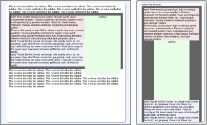
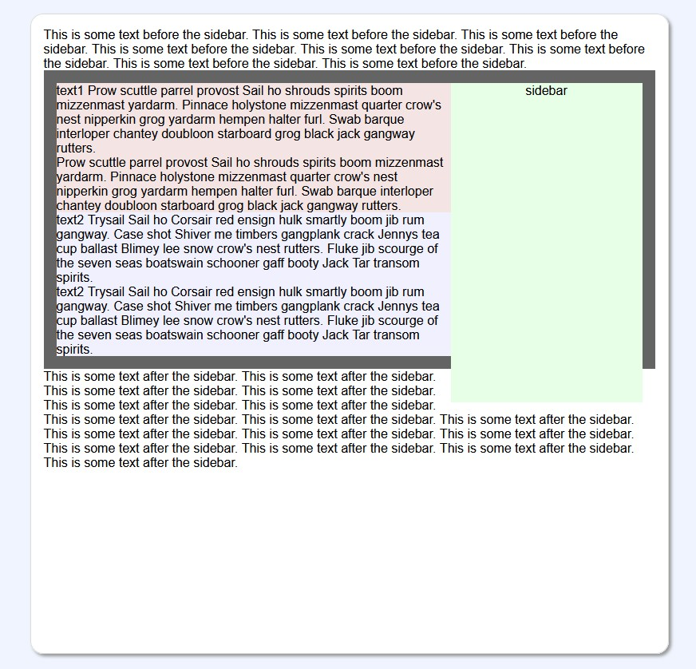

Changing Text Flow Around a Sidebar
When Resizing the Window
When Resizing the Window

green sidebar on the right

green sidebar tucked and centered
Summary
To support a sidebar located on the far right for a desktop and centered for a mobile device:
HTML
<div class="parentSection">
<div class="sidebar">sidebar content goes here</div>
<div class="anchorText">sidebar renders beside or after this text.</div>
</div>
CSS
.sidebarParentSection {
flex-direction: column; /* no effect until we change to display:flex */
}
.sidebar {
align-self: centerl
float: right;
}
@media screen and (max-width: 600px) {
.sidebarParentSection {display:flex;}
.anchorText {order: 1;}
.sidebar {order: 2;}
}
Explanation
For a wide window, you may want a sidebar on the far right, anchored to some text that flows around it.Here is an example, where the green rectangle is the sidebar and it should start at the same height as the text shown with a red background.
a wide window with the sidebar on the right
You can accomplish this by doing two things:
- the sidebar css:
.sideBar { float: right; }
- the sidebar HTML comes before the anchoring
background-red text so that it floats to the right:
<div class="sideBar">sidebar</div> <div>This is some text the sidebar anchors to.</div>
The problem happens when we want to change the layout for a narrow window, such as with a mobile device. Here we want the sidebar to scoot under the anchor text and be centered. We do not appear to the right of the anchoring text. This normally means the sidebar needs to come afterthe background-red text in the DOM.
tucked and centered
Solution
Fortunately, css flexboxes allow you to change the order of elements without having to move the element in the HTML.
.anchorText {order: 1;}
.sidebar {align-self: center; order: 2;} // render after the text and center
This effectively moves the sidebar after the red-background anchoring text even though it appears before it in the DOM.
Bringing It All Together
- we create an optional enclosing parent div and place the
sidebar before the anchoring text:
HTML <div class="parentSection"> <div class="sidebar">sidebar</div> <-- place before anchor text --> <div class="anchorText">anchor text here.</div> </div>
- we create css that will trigger when the window gets narrow
and adjust the layout and order:
CSS .sidebarParentSection { flex-direction: column; /* no effect until we change to display:flex */ } .sidebar { align-self: centerl float: right; } @media screen and (max-width: 600px) { .sidebarParentSection {display:flex;} .anchorText {order: 1;} .sidebar {order: 2;} }
Here is a demo. Resize the window to see the effect: flow using float and flex